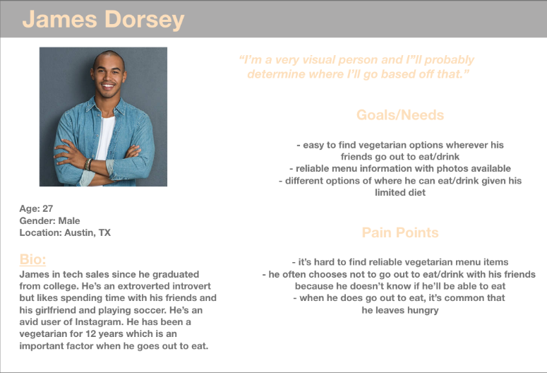
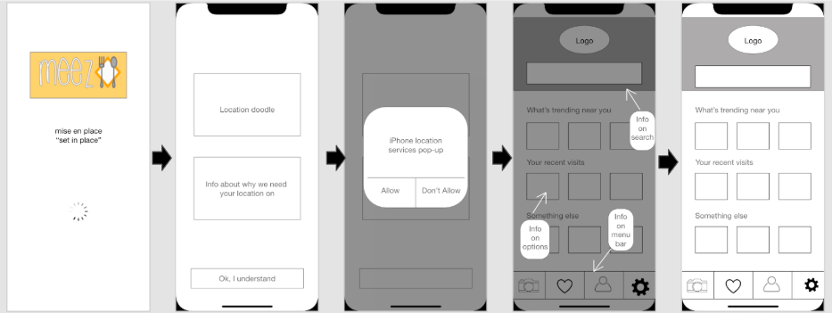
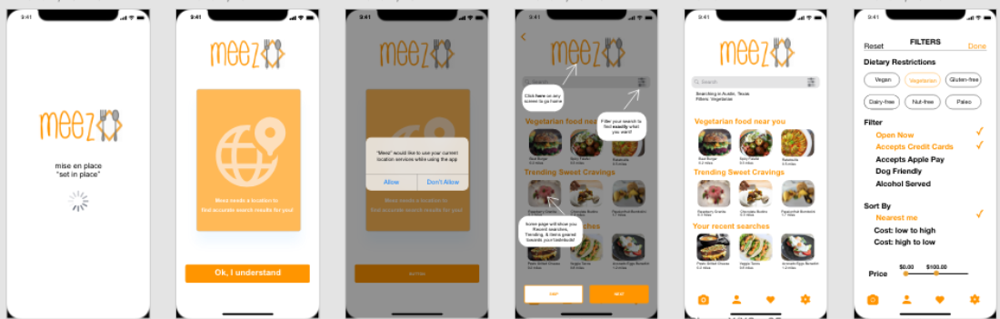

We believe that when users go out to eat with a specific dish/drink in mind, they find it challenging to reliably figure out where that dish/drink is available given the multitude of different tools and lack of results.
The goal of this project is to create a one-stop shop to find any specific dish/drink you're craving. Meez allows you to quickly discover restaurants that have the specific food and drink items you’re looking for.
We used several methods to analyze the data we gathered from the research, such as: an affinity diagram, a journey map, and an empathy map. With this analysis, we were able to create our User Persona
We started with low-fi digital wireframes
We then moved to hi-fi ditifal wireframes
This project taught us a lot about teamwork and moving from idea to action. We learned how to work together and incorporate different viewpoints into one final product.This has been an exciting journey, but have a lot of thoughts on where it can lead to next. A few things to consider for the future of Meez are: